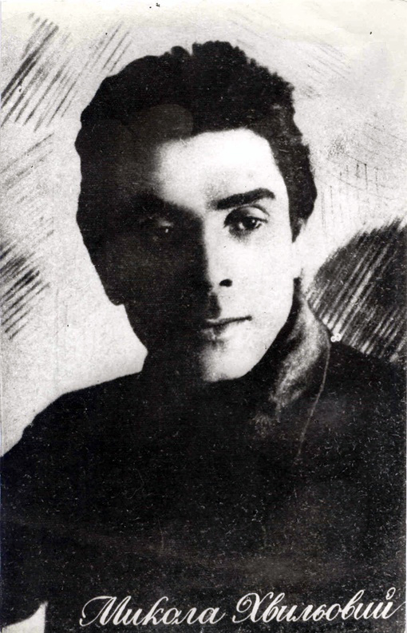
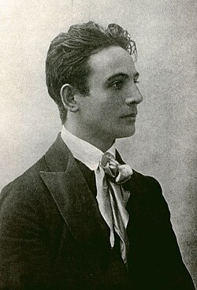
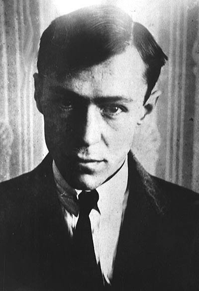

Письменник, поет, публіцист. Засновник ВАПЛІТЕ (Вільної академії пролетарської літератури). Його гасло «Европа чи Просвіта?» та заклик «Геть від Москви!» стали орієнтиром для нової української еліти. Покінчив життя самогубством на знак протесту проти Голодомору та арештів друзів.

Геніальний український режисер, актор, теоретик театру. Створив філософський театр «Березіль» у Харкові, який вивів українське театральне мистецтво на європейський рівень. Був заарештований у 1933 році та розстріляний в Сандармоху.

Один із найвидатніших прозаїків українського модернізму, майстер психологічного роману, перекладач французької класики. Його знаменитий роман «Місто» розкриває складну психологію людини, що намагається завоювати міський простір. Став жертвою розстрілів 1937 року.